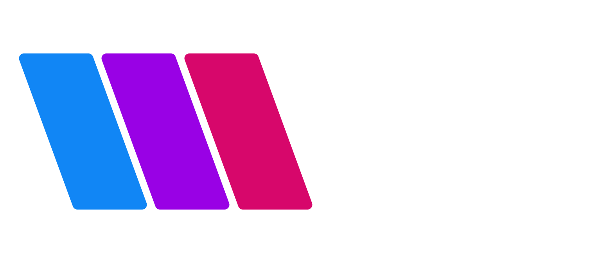

Club VAC
Soutien actif
0,99 $ CA / mois
- Badges de fidélité et émojis
- Réponse prioritaire aux commentaires
- Discord réservé aux membres

Vulgarisateur Apple & Cie
VAC est la chaîne de Mat pour mieux utiliser votre Mac, votre iPad et votre iPhone, choisir de bonnes apps, comprendre l’IA et garder un rapport pragmatique à la technologie.
Ce que vous trouverez ici
Je pars des vrais problèmes : configurer, choisir, automatiser, comprendre, gagner du temps. L’objectif n’est pas d’aimer la tech pour la tech, mais de vous aider à faire de meilleurs choix au quotidien.
Le Club VAC
Les abonnements servent à soutenir la chaîne et à donner quelques avantages aux personnes qui veulent suivre VAC de plus près.
Club VAC
0,99 $ CA / mois
Club VAC
1,99 $ CA / mois
Club VAC
2,99 $ CA / mois
Les tarifs et avantages peuvent évoluer sur YouTube. Les membres ont aussi accès à l’espace Discord, à la page YouTube membres et aux liens privés.